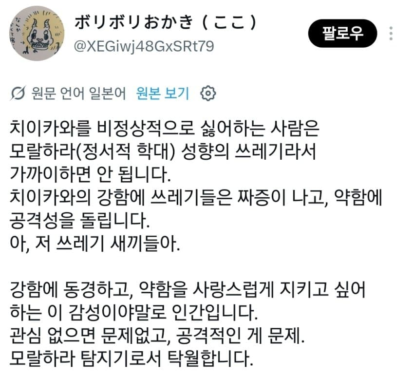
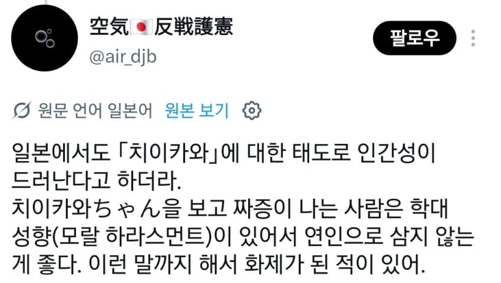
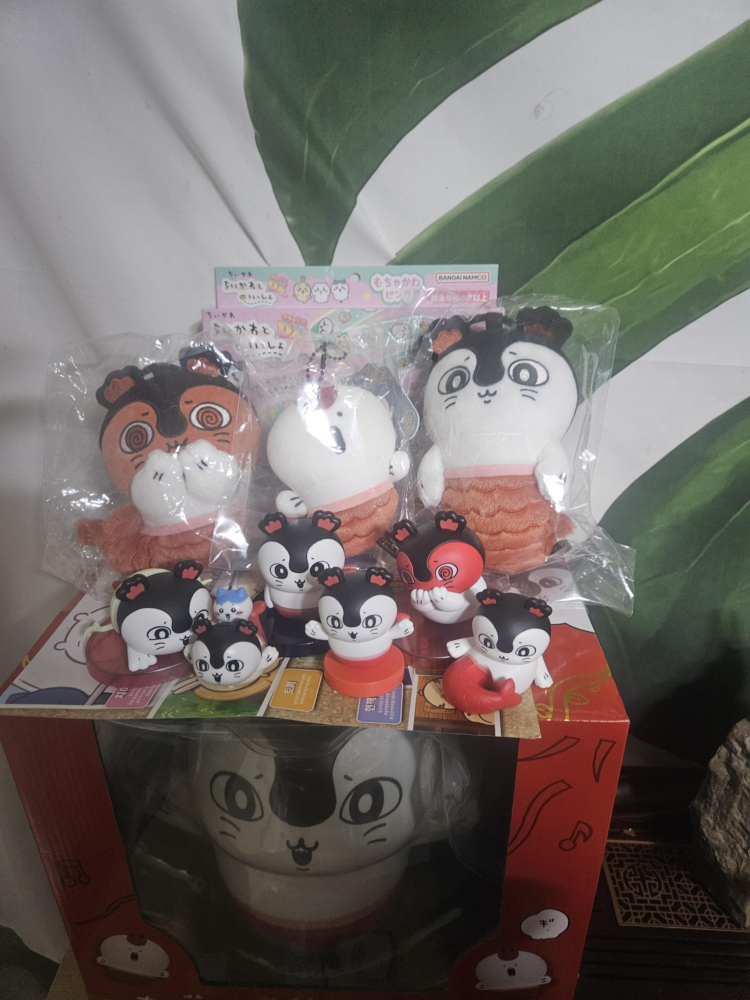

치이카와를 울보라고 욕하는 사람들은 실제 주변사람의 약한면을 보면 물어뜯을 생각밖에 안하는 사람들이니까 가까이 두지 말라는 얘기가 일본에서 큰 반응을 얻고 있다고 함

내 얘긴 아닌 듯


치이카와를 울보라고 욕하는 사람들은 실제 주변사람의 약한면을 보면 물어뜯을 생각밖에 안하는 사람들이니까 가까이 두지 말라는 얘기가 일본에서 큰 반응을 얻고 있다고 함

내 얘긴 아닌 듯
맨헤라들 자기 합리화를 위해
캐릭터 갖고오는거 어디 한 두 번도 아닌데
뭔 개같은 판별법이냐
근데 왜 이렇게 섬뜩하게 생겼냐? 순간 보고 깜짝 놀랬네 ㅅㅂ
플라스틱 조그마한 굿즈 쪼가리도 랜덤 가챠 넣어놓은 악랄함... 다 모으는데 5만원 가까이 들었다...
여기서 말하는건 치이카와라는 작품이 아니라 작 중 치이카와 캐릭터 자체릉 싫어하는걸 말하는거임.
사실 치이가 좀 짜증나는 면이 있는것 자체는 맞아서 주인공중 인기가 가장 낮은 편이긴 한데 그걸 넘어서 증오하는 애들은 뭔가 좀… 그런거 아닌가 하는 느낌이 드는것도 뭐 이해 안가는건 아니라
모몬가가 더 설득력있음
쿠리만쥬 좋아하면?
먼작길
그냥 술졸아하는 아저씨
나는 감정없는 사이코패스라 훈이 노진구 단비 치이카와 봐도 짜증이 안 남. 오히려 웃음이 나온달까?
난 우사기가 제일 좋고 쿠리만쥬가 다음으로 좋음... 치이카와는 뭔가 남의 애기 보는 느낌이라 귀엽긴 한데 크게 정은 안가더라
근데 싫어할 이유까지 있나?
난 참피가 너무 좋아
똥닝겐상 요즘은 애호파가 대세인 데스우
세레브하고 카와이한 와타시의 자들을 키워 보는 건 어떤 데스?
나의 마음을 도려내는 분충은 용서치 않아요!
본적없지만 걍 표정 좆같아서싫은데
옆에있으면 귀엽겠지만
아무생각없다가도 이런거 보면 싫어진다니까
아니 님은 포식자 세이렌만 ㄷㄷㄷㄷ
모몽가 소리지를때마다 찢어버리고 싶은데
다들 날 멀리하도록
막상 일 닥치면 어떻게든 해내는 캐릭터인데 그 매력을 모르는 애들이 많음
막말로 상황만 주어지면 대악마 군단을 지휘하는 데몬 프라이마크의 심장에 지울 수 없는 흉터를 남기고 무사히 돌아올 캐릭터임
거짓된 황제의 심장에 사스마타 꽂는건 가능?
치이카와라면 할걸
거짓된 황제에게 죽음을!
세이렌 너무 무서움
근데 영화 보면 모몬가는 좀 짜증나더라
씹프피 천국이자나